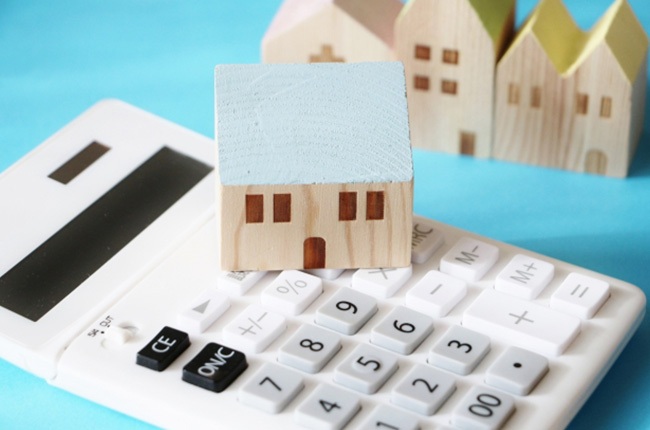

- トップ
- 不動産売却の4つのポイント
不動産売却を始める前に押さえておきたい4つのポイントRealestate sale
こちらのページでは、山口市の株式会社アライブが、不動産売却を成功に導くためのポイントをご紹介します。初めて不動産売却を検討しているという方はぜひチェックしてみてください。
ポイント1：売却時の考え方
少しでもよい条件で不動産を売却したいのであれば、お客様自身がある程度の不動産売却の基礎知識を身に付けておくことが大切です。仲介役となる不動産会社にすべてを任せ無知のままでいると、後々「もっと高く・早く売れると思ったのに」「思った以上に経費がかかって大変」といった後悔が出てくる可能性があります。あらかじめ不動産売却の知識を身に付け、事前準備をしっかり行うようにしましょう。
そして、忘れてはいけないのが、「買っていただく」という謙虚なスタンスでいることです。不動産取引は人対人の取引であり、気持ちよく対応してくれる売り主から買いたいと思うのは当然のことです。不動産売却の知識を身に付けるとともに、謙虚なスタンスを忘れずにいることが、不動産売却を成功に導くための近道となるでしょう。
ポイント2：不動産会社の選び方
不動産売却のカギを握るのが、仲介役となる不動産会社です。お客様にとって最善の提案ができる不動産会社を見つけられるかどうかが、不動産売却の成否を分けます。では、不動産会社を選ぶときにはどんなことに注意したらよいのでしょうか。以下でご説明します。
不動産会社の人と必ず会って、じっくり話をしましょう
自分の大切な資産の行く末を託す不動産会社には、お客様やその物件のことを第一に考えてくれる存在であってほしいものです。物件の特性を踏まえた上でどんな戦略で売却活動をしていくのがベストであるか、いつ売却をスタートさせるのが好機か、売却後のお客様の人生がより豊かになる売却方法はどれか。不動産取引だけでなく、売却後のお客様の人生のことまで考え提案してくれる不動産会社なら非常に安心です。
とはいえ、不動産業者のホームページを確認すると、「お客様第一」といった聞こえのいい言葉が並ベられているサイトばかりです。ホームページだけで本当に「お客様第一」を実践している業者を見極めるのは困難ですので、信頼できそうな業者を2、3ピックアップし直接会ってみるのがよいでしょう。
お客様の想いや悩みを時間をかけて聞いてくれるか、所有する物件の特性に合わせたアドバイスをくれるか、地域情報を熟知しているか、といったことをチェックしながら不動産会社の人と会ってみることで、お客様の立場に立った本当に「お客様第一」を実践できる業者かどうかがわかるはずです。
大手不動産業者と地元密着型の不動産業者の比較
大手の不動産業者と、地域密着の中小規模の不動産会社とでは、様々な点で違いがあります。それぞれのメリット・デメリットを知って、よりお客様に合うほうを選ぶようにしましょう。
※表は左右にスクロールして確認することができます。
| 種類 | メリット | デメリット |
|---|---|---|
| 大手の業者 |
|
|
| 中小規模の業者 |
|
|
ポイント3：売却時にかかる諸費用

不動産売却時は、売り主も様々な費用を負担することになります。その多くは取引の最中に発生するため、事前に準備をしておく必要があります。まずは何にいくらぐらいかかるのか押さえておきましょう。
仲介手数料
仲介売却を利用して不動産売却を行う場合、売買契約成立時に仲介の報酬として、売り主は不動産会社に仲介手数料を支払います。一般的に「売買価格×3％＋6万円×消費税」として計算され、売買価格が高値になるほど額が大きくなります。
※売買価格が400万円以下の場合は別途の計算方法があります。
抵当権抹消費用（住宅ローンが残っている場合）
不動産を購入する際に住宅ローンを利用して金融機関から借り入れをした場合、家を担保とした抵当権が設定されます。万一住宅ローンの返済が滞った場合には、金融機関はこの抵当権を行使して融資金額を取り戻します。
売却する物件の住宅ローンが残っている場合、住宅ローンの残債を支払い、抵当権を抹消する必要があります。抹消手続きにかかる金額は2万円程度ですが、これらの手続きを司法書士に依頼するため報酬として別途数万円かかります。
ローン返済費（住宅ローンが残っている場合）
通常、住宅ローンはすべて返済していないと、住宅を売却することはできません。住宅ローンを一括返済する際には、金融機関によって繰り上げ返済手数料がかかります。
証明書の発行費
売買契約を結ぶにあたり印鑑証明書や住民票といった行政書類を準備する必要があります。大きな金額ではありませんが、書類発行には手数料がかかります。
引越し費・処分費
現在住んでいる家を売却に出す場合、引越し費用が必要となります。また、引っ越しの際に家具や家電製品を廃棄する場合には処分費もかかります。
ポイント4：売却までの流れ
不動産会社に依頼して買い主を探してもらう「仲介売却」の売却の流れを以下でご説明します。
仲介売却
- 【1】相談
- 不動産売却を検討しているなら、まずは不動産会社に行って相談してみましょう。「いくらで売れるのか」「どのくらいの期間で売れるか」「売却に伴う費用はいくらぐらいか」など様々な疑問も率直に聞いてみましょう。
- 【2】不動産査定
- 不動産会社が建物の状況や立地・周辺環境、市場相場などから総合的に判断し、査定価格を算出します。なお、査定価格はあくまでも市場に出して売れるであろうという予想価格であり、実際その価格で売れると保証するものではありません。
- 【3】媒介契約
- 不動産査定の結果に納得できたら、不動産会社と媒介契約を結びます。
- 【4】売却活動の準備
- 新聞広告やインターネットなど様々な方法で宣伝活動を行う準備をします。購入希望者から内見の希望があれば、売り主が対応することになりますので、事前に物件内部の清掃や整理整頓をしておきましょう。
- 【5】売却活動/条件交渉
- 購入希望者を探す売却活動を行います。購入希望者が見つかったら、契約に向けて条件交渉します。
- 【6】購入申し込み・契約締結
- 条件交渉が整ったら、購入希望者に購入申し込みをしてもらいます。その後、売り主と買い主の間で不動産売買契約を結び、買い主から手付け金を受け取ります。
- 【7】引き渡し準備
- 速やかに物件を引き渡せるように、引っ越しなどの準備をしましょう。まだ住宅ローンが残っている場合には、抵当権抹消の手続きが必要です。
- 【8】お引渡し/代金の授受
- お引渡しと所有権移転を行い、買い主から売却代金の残金を受け取ります。また、不動産会社に仲介手数料を支払います。これで売却完了です。